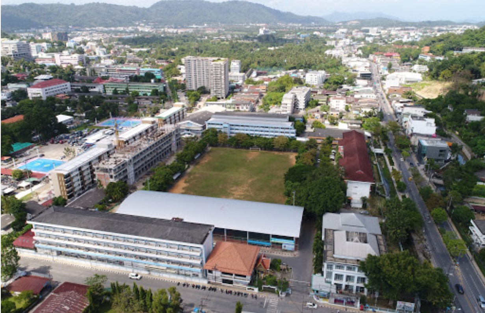

CSTU Passport by Akawat
ขอต้อนรับเข้าสู่เว็บไซต์ของผม
คุณสามารถดูข้อมูลเกี่ยวกับผมเพิ่มเติมได้โดยการเลื่อนลงดูด้านล่าง
หรือจะวางเมาส์ไว้ที่แท็บทางด้านบน(≡)
เผื่อคุณคุณไม่รู้จักผม ผมจะขอเกริ่นข้อมูลส่วนของผมคร่าวๆ ก่อนละกันครับ
ผมชื่อ นายเอกวัฒน์ โมรัษเฐียร หรือคุณจะเรียกผมว่า เพชร ก็ได้
เพื่อนบางคนของผมก็ชอบเรียกว่า เพชอน แปลกดีเนาะ
ผมเป็นคนชอบฟังเพลง 90's สนใจเกี่ยวกับเทคโนโลยีสมัยเก่ารวมถึงสมัยนี้ด้วย
และผมชอบเขียนโค้ดในการแก้ปัญหากับสิ่งที่มันมีปัญหาอ่ะ

My Introduction Video
My Contact
pechon_sk42 (Sept2023) |
petchsko123 |
||
Eakawat Moradsatian |
petchsrojar@gmail.com |
||
EakawatTwo Moradsatian |
petchsony123 |
||
0887607691 |
Petchsrojarr420 (Sept2023) |
Where I am come from?
ผมมาจากโรงเรียนภูเก็ตวิทยาลัยครับ ซึ่งโรงเรียนแห่งนี้ตั้งอยู่ในจังหวัดภูเก็ต ซึ่งจังหวัดภูเก็ตนั้นเป็นจังหวัดทางภาคใต้ฝั่งตะวันตก ซึ่งเป็นจังหวัดที่มีนักท่องเที่ยวที่มีชาวต่างชาติมาเที่ยวมากที่สุดในประเทศไทย เพราะภูเก็ตมีความสวยงามทางด้านธรรมชาติ ทำให้มีที่เที่ยวที่หลากหลาย อย่างเช่น
 |
 |
 |
||
|---|---|---|---|---|
*แหลมพรหมเทพ* |
*หาดในยาง* |
*Phuket Old Town* |
โรงเรียนมัธยมศึกษาที่ผมจบมา ซึ่งก็คือ โรงเรียนภูเก็ตวิทยาลัย ซึ่งเป็นโรงเรียนที่มีชื่อเสียงเป็นอย่างมากในจังหวัดภูเก็ต นอกจากทางด้านวิชาการที่โดดเด่นแล้ว โรงเรียนแห่งนี้ยังมีประวัติศาสตร์อันยาวนาน รวมถึงโรงเรียนแห่งนี้มีเด็กจบออกมา เข้ามหาวิทยาลัยแห่งนี้เป็นอันดับต้นๆของจังหวัด

|
|||
|
หน้าโรงเรียนภูเก็ตวิทยาลัย |
หอสมุดโรงเรียน |
||
|  |

|
||
ภาพมุมสูงโรงเรียน |
หน้าตำหนักอาจารย์ใหญ่ท่านแรก |
What I am doing in my free time?

More Video ...
พรหมลิคริสต์ งานแต่งเพลงศาสนาตอน ม.6 ช่วยแปลง 30p to 60p
Call Center อลเวง ละครสั้นตอน ม.6 ตัวแสดง+ตัดต่อ
Pasadena played by Hupfeld Phonoliszt Violina
Retrived from https://youtu.be/rEECgZ5b8IY?si=Y3rzJoATJ4nA_sO0
Another More Picture
 |
 |
|||
น้องแมวสีดำที่แก่และอ้วนมากๆ |
น้องแมวส้มที่ขี้อ้อนสุดๆ ถูทุกสิ่งทั้งวัน |
เมื่อแผ่นป้ายบิดแล้วมองมุมทางเข้า ที่จอดรถนี้ขาดทุน 100% |
||
 |
 |
 |
||
กุ้งสดแช่น้ำปลา ~~ เห็นแล้วอยากกินมว้าก |
อยากกินจินดาอีกละแต่คนเยอะและคิดว่าแพงไป(มาก) |
อยากกินโทสต์จังเลย คิดถึงรสชาติละ @^~^@ |
||
 |
||||
|
เครื่องคิดเลขวิทยาศาสตร์แบบสายลับ แต่สีมันดูเด่นไปหน่อย |
|
My Favourite Music !!
| เพลง 90's | เพลง 2000's-Modern | ||
รักปอนปอน - ไมโคร (opus) |
L.O.V.E - สามซุปเปอร์แก็งค์ (opus) |
||
ทุกข์ไม่เว้นวันราชการ - อัสนี วสันต์ (opus) |
ฤดูร้อน - Paradox (opus) |
||
ด้วยรักและผูกพัน - ธงชัย แมคอินไตย์ (AAC) |
อยากร้องดังดัง - Palmy (AAC) |
||
หลอกกันเล่นเลย - นูโว (AAC) |
ปลิว - พลอยชมพู (AAC) |
||
รอยร้าว - อิทธิ พลางกูล (AAC) |
เรื่องที่ขอ - ลูลา (AAC) |
||
ได้อย่างเสียอย่าง - อัสนี วสันต์ (AAC) |
ลูกอม - วัชราวลี (AAC) |
||
กองไว้ - เจตริน วรรธนะสิน (AAC) |
ซักวันฉันจะดีพอ - Bodyslam (AAC) |
||
อย่าดีกว่า - ไมโคร (AAC) |
เพ้อเจ้อ - Alarm9 (AAC) |
||